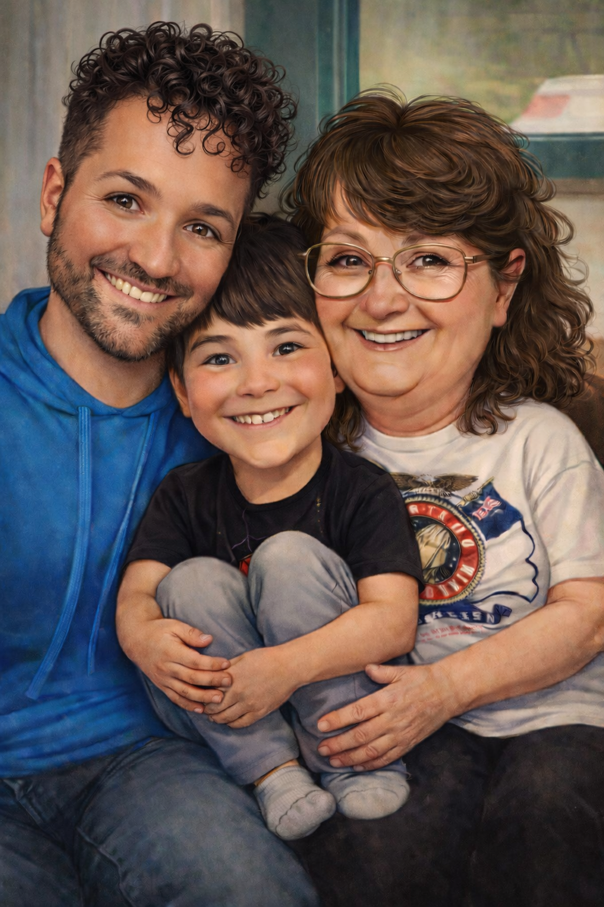

Classic Restoration
Ideal for photographs needing careful cleaning and enhancement while preserving their original character.
- Color correction
- Lighting adjustments
- Dust removal
- Minor repair work
- Image sharpening
Professional Restoration Services
No two photographs carry the same history. Every restoration is approached with patience, craftsmanship, and respect for the people whose stories deserve to be preserved.
Some photographs need only gentle enhancement. Others arrive faded by time, damaged by water, creased from decades of handling, or missing important portions altogether.
Rather than placing every project into fixed packages, every restoration begins with a careful evaluation so the work reflects the individual history of each photograph.
Our Restoration Services
Ideal for photographs needing careful cleaning and enhancement while preserving their original character.
Designed for treasured family photographs requiring extensive restoration and artistic reconstruction.
Bring generations together through carefully crafted portrait compositions created from multiple family photographs.

Legacy Portraits
Life sometimes separates families before a photograph can ever be taken. A grandparent may never meet a grandchild. A wedding photograph may have been lost. A loved one may only exist in one faded picture.
Through respectful digital artistry, multiple photographs can be brought together into one beautiful portrait while preserving every individual's identity and historical integrity.
View Legacy GalleryEvery Restoration Is Different
Age, fading, scratches, water damage, creases, tears, and missing portions all influence the amount of restoration required.
Some projects require advanced reconstruction, colorization, lighting balance, and careful refinement of facial details.
Legacy portraits often combine several separate photographs into one natural family portrait.
Every consultation is built around your goals, your photographs, and your family's story.
Frequently Asked Questions
Every photograph is unique. A consultation allows every restoration to receive the time and attention it deserves.
Many photographs with tears, water damage, creases, fading, and missing areas can often be restored significantly.
Yes. Legacy Portrait Creation allows separate family photographs to become one timeless image.
Never. All restoration work is performed digitally, allowing your original photograph to remain unchanged.
Begin Your Restoration Journey
Whether your photograph needs gentle enhancement, advanced restoration, or a custom legacy portrait, every project begins with a conversation. We would be honored to help preserve the memories that matter most.
Request Consultation